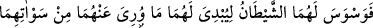

İblis’in cennetten çıkarılmasından sonra Biz Âdem’e dedik ki: “Ey Âdem sen ve eşin”
Havva “cennette durun.” orada ikamet etmeye devam edin.
Allah’ın bu emri, onlara izin ve ikram mânâsındadır.
“Zevc” (eş), Arab dilinde eşlerden herbirini ifâde eder. Eşlerin her ikisine birden
“zevcân” denir.
Ayette Âdem (a.s.) ile eşi Havva’ya durması emredilen cennet, ya mükafatlandırma
yeri olan “Huld (ebedîlik) cenneti”dir. İlim ehlinin çoğu kitaplarında zikrettikleri çeşitli
delillere göre bu görüştedir.
Ya da bahsedilen cennet, gökyüzünde bulunan bir cennettir. Âdem ile Havva dünyâya
oradan indirilmişlerdir.
Veya adı geçen cennet, yeryüzünde diğer yerlerden yüksekçe bir mevkide bulunan bir
cennettir. Orası ağaçları ve meyveleri bol, gölgelikler ve çeşit çeşit nimetler içinde göz
kamaştıran bir yerdir. Allah Teâlâ orasını Âdem ile Havva için hazırlamış ve onlar için
bir imtihan yeri kılmıştır. Nitekim zâhir ve bâtın ehlinden bazı muhakkıklar bu görüşü
tercih etmişlerdir. Çünkü burada Âdem ile Havva “o ağacın meyvesinden yememek”le
mükellef tutulmuşlardır. Oysa amellerin karşılığı olan huld cennetinde mükellefiyet
yoktur. Orada bir emir ya da yasak söz konusu değildir. Yine Âdem (a.s.) orada uyumuş,
oradan çıkarılmış, İblis de oraya girmiştir. Halbuki hakiki cennette uyuma, girdikten
sonra oradan çıkma yoktur. Şeytan’ın oraya girmesi câiz değildir.
Yine Kabil’in: “Ben cennet evladındanım.”[12] demesi de açıkça bu görüşü destekler.
Ayrıca rivayet edilir ki: “Âdem (a.s.) vefat etmek üzere iken canı cennetten bir salkım
üzüm çekti. Oğulları onu aramaya çıktılar. Yolda meleklerle karşılaştılar. Melekler
onlara: “Ey Âdemoğulları ne istiyorsunuz?” dediler. Onlar: “Babamızın canı cennetten
bir salkım üzüm çekmiş.” diye cevap verdiler. Melekler: “Geri dönün. Artık ihtiyaç
kalmadı.” dediler. Melekler, Âdem (a.s.)’ın ruhunu kabz ettiler. Onu gasl edip,
kokuladılar ve kefenlediler. Sonra Cebrail (a.s.) onun namazanı kıldırdı. Oğulları da
meleklerin ardında namaza durdular. Melekler onu, defnettiler ve oğullarına:
“Ölüleriniz hakkındaki sünnetiniz (takip edeceğiniz yol) budur.” dediler.[13]
Orada “dilediğiniz yerden yeyin.” Cennetin dilediğiniz yerine gidebilir, orada arzu
ettiğiniz meyvalardan istediğiniz kadar yiyebilirsiniz. Canınız çektiğince oradaki
nimetlerden faydalanabilirsiniz.
“Fakat şu ağaca yaklaşmayın.” Bu ağaç hakkında da ihtilaf edilmiştir. Allah da onun
adını ve hangi ağaç olduğunu mübhem bırakmıştır. Eğer onun açıklanmasında başka
hususlarda olduğu gibi bizim için bir fayda olsaydı, Cenab-ı Hak onu bize bildirirdi.
(Âkâmü’l-mercan’da böyle geçmektedir.)
“yoksa zalimlerden olursunuz.” Nefislerine zulmedenlerden olursunuz.